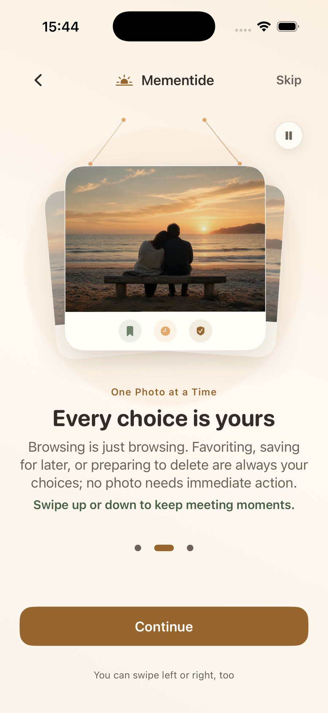
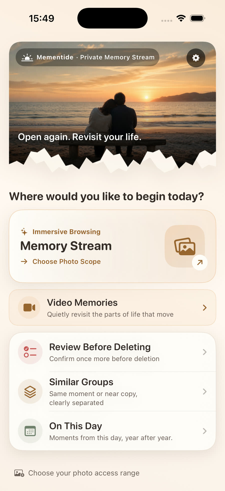
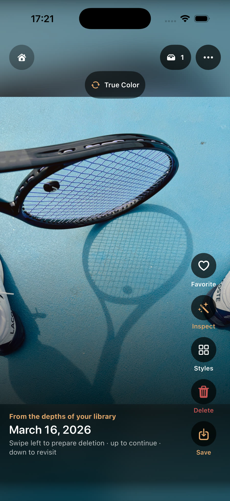
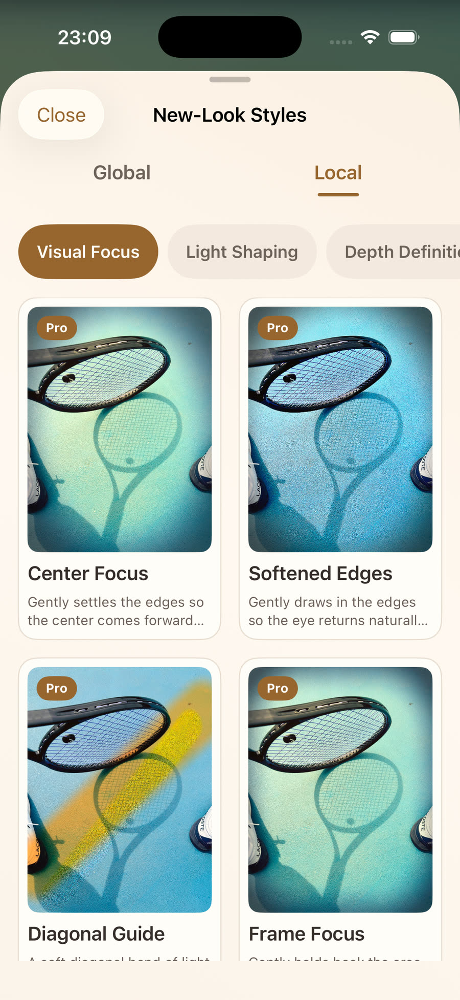
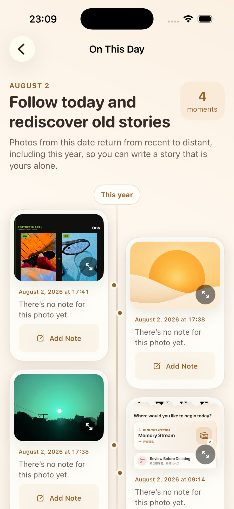
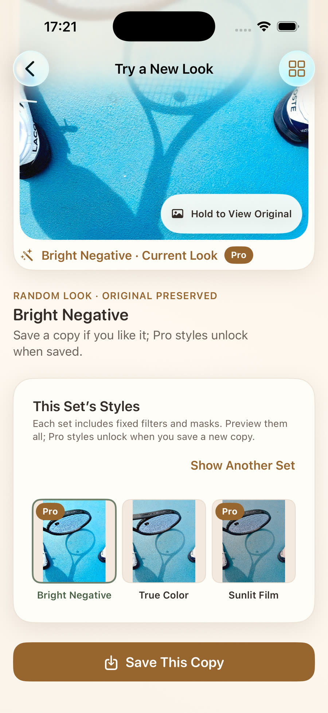

Spend a little time with your own life
Move through photos, Live Photos, and videos in a calm vertical stream. Browsing is never treated as a decision.
A private place to revisit photos, Live Photos, and videos
Mementide turns your photo library into a gentle stream of memories. Browse without making a decision. When something catches your eye, favorite it, revisit it later, try a new look, or simply keep going.


Four ways to revisit your life
Scrolling moves through memories. It never favorites, saves, or deletes. Stop whenever you like, and pick up where you left off.
Move through photos, Live Photos, and videos in a calm vertical stream. Browsing is never treated as a decision.
Photos you prepare for deletion stay in a local review list first. Nothing is deleted until you submit the request and confirm it with the system.
Compare related photos together, with observations that help you notice their differences. Mementide never chooses a winner for you.
Return to moments from this day in earlier years and leave a private memory note that stays on your device.
Real Mementide screens
Revisit first. If a moment catches your eye, compare it with the original, try a curated look, and save a separate copy only when the result feels right.




Designed around your privacy
Mementide uses Apple’s Photos services to access only the media you allow. Photo comparison, observations, look previews, and rendering happen on your device. If an original is stored in iCloud, Apple may retrieve it for the action you request.
Saving a result creates a new copy instead of overwriting the original.
Favorite, save, share, and delete actions begin only when you choose them.
Mementide never reports a deletion as complete before the system confirms it.
Mementide · iPhone & iPad
Mementide is available on the App Store. Current features, products, trial eligibility, and prices are shown in the app and on Apple’s purchase confirmation page.